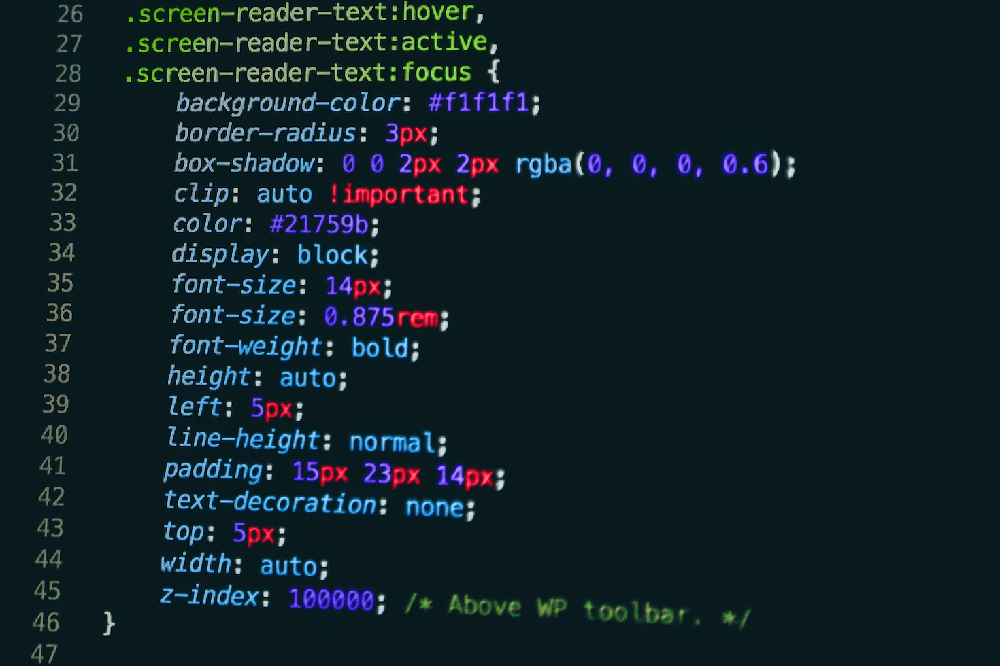

CSS (Cascading Style Sheets) adalah bahasa yang digunakan untuk mengatur tampilan dan tata letak halaman web. Dengan CSS, kita dapat mengubah warna, ukuran font, margin, padding, dan berbagai aspek desain lainnya.
Ada tiga cara penggunaan CSS dalam HTML:
style.
<style> di
bagian <head>.
.css dan dipanggil di dalam HTML menggunakan tag
<link>.
CSS menggunakan selektor untuk memilih elemen yang akan diberi gaya. Contoh selektor umum:
p { color: blue; } - Mengubah warna teks paragraf menjadi
biru.
#header { background-color: lightgray; } - Mengatur latar
belakang elemen dengan ID header.
.btn { font-size: 20px; } - Mengatur ukuran font untuk
elemen dengan kelas btn.
CSS juga mendukung desain responsif menggunakan media query, misalnya:
@media (max-width: 600px) {
body { background-color: lightgray; }
}
Dengan ini, tampilan akan menyesuaikan ukuran layar pengguna.
